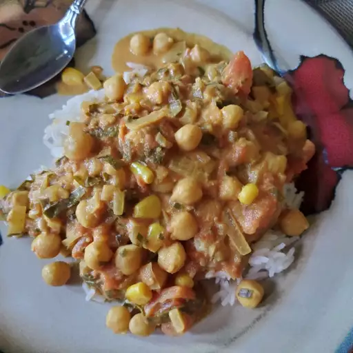

back to home
Chana Masala Recipe

Chana Masala(Chickpeas and Tomatoes)
Ingredients
- tablespoons vegetable oil
- 1 onion, chopped
- 1 clove garlic, minced
- ¾ cup water, divided
- 1 tablespoon ground coriander
- 2 teaspoons paprika
- 1 ½ teaspoons ground ginger
- 1 teaspoon ground turmeric
- ¼ teaspoon cayenne pepper
- ⅛ teaspoon ground black pepper
- ⅛ teaspoon ground cinnamon
- 2 (15 ounce) cans chickpeas (garbanzo beans), drained and rinsed
- 1 (15 ounce) can diced tomatoes in juice
- 1 large bay leaf
- 1 (16 ounce) can coconut milk
- salt to taste
Steps
- Heat oil in a 6-quart Dutch oven or large heavy pot over medium heat; sauté onion until translucent, 5 to 10 minutes. Add garlic and sauté until softened and fragrant, about 5 minutes. Add 1/4 cup water, coriander, paprika, ginger, turmeric, cayenne pepper, black pepper, and cinnamon to onion mixture. Cook and stir until fragrant, 2 to 3 minutes.
- Stir chickpeas, tomatoes in juice, remaining 1/2 cup water, and bay leaf into onion mixture; bring to a boil. Reduce heat and simmer until flavors have blended, about 10 minutes. Stir coconut milk into chickpea and tomato mixture; simmer for 2 to 3 more minutes. Add more water if needed and season with salt.